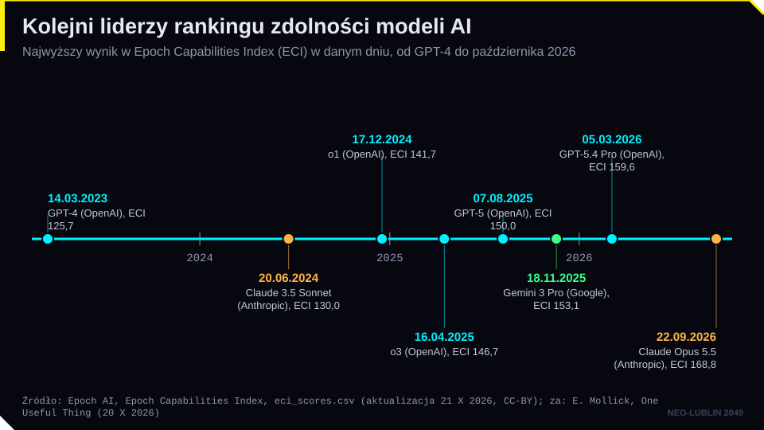
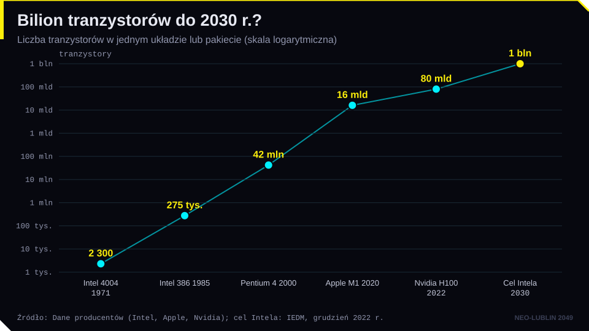
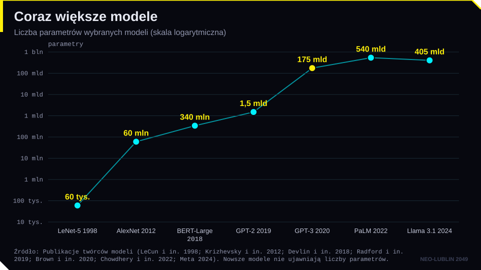
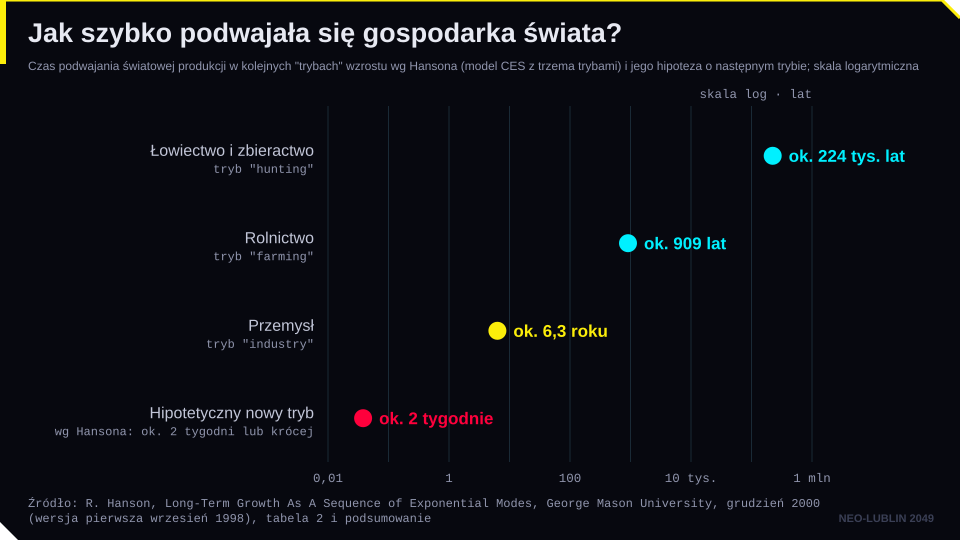
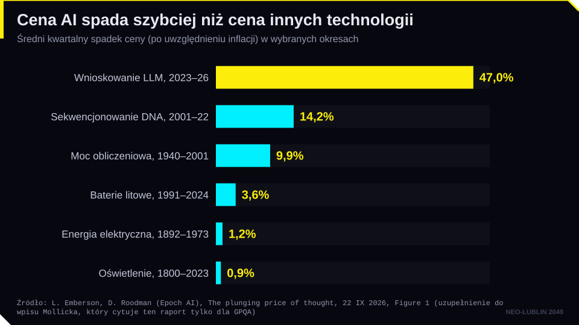
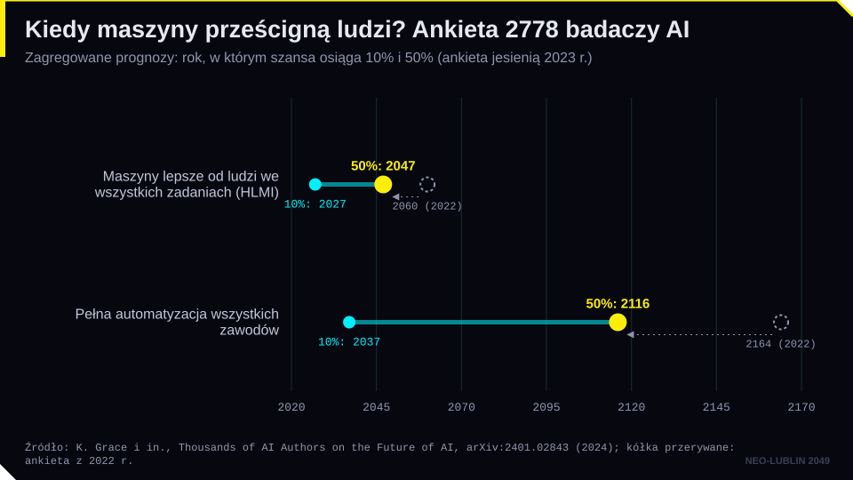
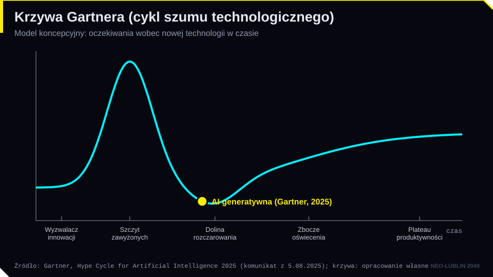
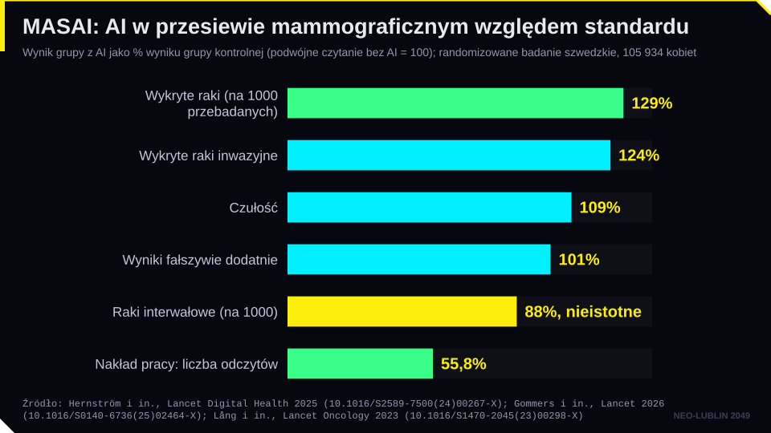
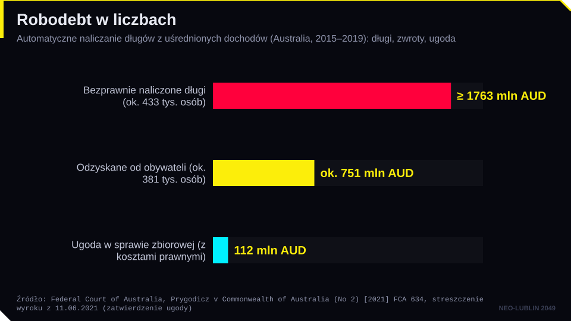

zbiór danych
AIQ: bezpieczeństwo AI, instytuty i wizje przyszłości
Instytuty bezpieczeństwa AI, dyplomacja i listy otwarte oraz zakładka „Wizje” z profilami myślicieli (m.in. Mollick, Imas) i ośrodkami wiarygodnej AI.
Dziennik · dzielnica 09 / 10 · spotkanie VII
Czuby: Piramida Korporacji
Z piramidy na wzgórzu reflektory oświetlają przyszłość. Zlecenie: oceń scenariusze rozwoju AI i to, co może z nimi zrobić prawo.
piątek 15.01.2027, 12:45–14:15 (spotkanie VII) · Aula WPiA UMCS
Strzałki lub spacja przewijają slajdy, klawisz F włącza pełny ekran.
Cel modułu. Po zajęciach student potrafi: wyjaśnić prawo Moore’a i prawa skalowania oraz ich granice; opisać pojęcie osobliwości technologicznej; krytycznie odczytać scenariusz „AI 2027” i wyniki ankiet wśród badaczy AI; rozróżnić stanowiska technooptymistów, ostrzegających przed ryzykiem i zwolenników tezy o „zwykłej technologii”; wyjaśnić problem dostosowania (alignment); na podstawie studiów przypadków wskazać przyczyny sukcesów i porażek wdrożeń AI oraz dobre praktyki, w tym obowiązki z AI Act.
Pytanie przewodnie. Jak stanowić prawo dla technologii, której przyszłości nikt nie potrafi wiarygodnie przewidzieć?
Nick Bostrom otwiera Superinteligencję (2014) „niedokończoną bajką o wróblach”. Wróble chcą wychować sowę, która pomoże im budować gniazda i będzie je chronić. Sceptyczny wróbel (w polskim przekładzie Gderacz) pyta, jak oswoić sowę, zanim dorośnie. Większość wyrusza na poszukiwanie jaja, a nad problemem oswajania pracuje garstka. Bajka jest metaforą sporu o AI: korzyści są oczywiste, ale pytanie o kontrolę zostaje na później.
Tempo zmian jest bezprecedensowe. ChatGPT zdobył milion użytkowników w pięć dni (grudzień 2022 r.) i około 100 mln w dwa miesiące. W październiku 2025 r. OpenAI podało około 800 mln aktywnych użytkowników tygodniowo, a w lutym 2026 r. 900 mln. W lutym 2024 r. OpenAI pokazało Sorę, model generujący wideo z tekstu, a już po kilku dniach ElevenLabs dodało do tych klipów wygenerowany dźwięk. Sora 2 (wrzesień 2025 r.) robi obie rzeczy jednocześnie. Ethan Mollick formułuje z tego zasadę praktyczną: zakładaj, że AI, której dziś używasz, jest najgorszą, jakiej kiedykolwiek będziesz używać.
Konflikt wokół nowych technologii nie jest nowy. W 1886 r. robotnicy w Chicago strajkowali o ośmiogodzinny dzień pracy, a zamieszki na placu Haymarket stały się symbolem ruchu robotniczego. W 2023 r. scenarzyści z Writers Guild of America strajkowali prawie pięć miesięcy. Umowa zbiorowa z października 2023 r. przesądziła, że materiał wygenerowany przez AI nie jest „materiałem literackim”, AI nie może pisać ani przerabiać scenariuszy, a studio musi ujawnić, że przekazuje scenarzyście materiał z AI. Aktorzy (SAG-AFTRA) wywalczyli wymóg zgody i wynagrodzenia za cyfrowe repliki. To przykład, że prawo pracy i układy zbiorowe mogą reagować szybciej niż ustawodawca.
Derek Thompson w eseju You have 18 months (2025) przekonuje, że prawdziwym zagrożeniem nie jest chwila, w której AI nas prześcignie, ale chwila, w której przestaniemy myśleć sami. W lutym 2026 r. Mustafa Suleyman (Microsoft AI) zapowiadał, że większość zadań pracowników biurowych, także prawników, da się zautomatyzować w 12–18 miesięcy. Takie prognozy warto zapisywać i sprawdzać.
Mollick we wpisie „30 Months on the Exponential (in Charts)” (One Useful Thing, 20.10.2026) podsumowuje 30 miesięcy między swoimi książkami jako postęp wykładniczy, ale nierówny. Opiera się m.in. na indeksie Epoch Capabilities Index: według danych Epoch AI z 21.10.2026 GPT-4 z marca 2023 r. ma wynik 125,7, a najwyższy wynik, 168,8, ma Claude Opus 5.5 (wrzesień 2026 r.), przy czym 179 spośród 270 ocenionych modeli przewyższa GPT-4. Prowadzenie w rankingu zmieniało się po GPT-4 wielokrotnie, ale tylko między trzema firmami: OpenAI, Anthropic i Google. Z perspektywy prawa wniosek jest praktyczny: stan techniki, który ustawodawca czy sąd opisuje dziś, po kilku miesiącach będzie przestarzały, a indeks Epoch jest miarą syntetyczną, nie oceną przydatności w sprawach prawniczych.

Prawo Moore’a. Gordon Moore w 1965 r. zauważył, że liczba elementów w układzie scalonym podwaja się co rok; w 1975 r. skorygował okres do dwóch lat. To obserwacja empiryczna i zarazem plan przemysłu półprzewodników, a nie prawo natury. Intel w 2022 r. zapowiedział przejście od około 100 mld do biliona tranzystorów w jednym pakiecie do 2030 r.

Prawa skalowania. J. Kaplan i współautorzy (2020) wykazali, że błąd modeli językowych spada przewidywalnie, gdy rośnie liczba parametrów, ilość danych i moc obliczeniowa. Praca nad modelem „Chinchilla” (Hoffmann i in., 2022) pokazała, że dane i parametry trzeba zwiększać proporcjonalnie. Według Epoch AI moc obliczeniowa używana do trenowania czołowych modeli rośnie 4–5 razy rocznie. Od 2024 r. pojawiła się nowa oś skalowania: więcej obliczeń w trakcie udzielania odpowiedzi (modele „rozumujące”, np. OpenAI o1). Prawo też posługuje się miarą skali: AI Act domniemywa, że model ogólnego przeznaczenia stwarza ryzyko systemowe, jeśli do jego trenowania użyto ponad 10²⁵ operacji zmiennoprzecinkowych (art. 51 ust. 2).

Długie trwanie. Robin Hanson (2000) oszacował, że gospodarka świata podwajała się co około 224 tys. lat w epoce łowców-zbieraczy, co 909 lat w społeczeństwach rolniczych i co 6,3 roku w społeczeństwach przemysłowych. Hanson wnioskował, a Bostrom za nim przypomina, że gdyby doszło do kolejnego przejścia o podobnej skali, gospodarka mogłaby się podwajać co dwa tygodnie. Gdyby zaś utrzymał się wzrost z ostatnich 50 lat, świat byłby w 2050 r. około 4,8 raza, a w 2100 r. około 34 razy bogatszy niż dziś. Chodzi o całą gospodarkę światową, nie o dochód na osobę.

Osobliwość technologiczna to hipotetyczny moment, w którym tempo rozwoju technologii przekroczy ludzką zdolność przewidywania. I. J. Good (1965) pisał o „eksplozji inteligencji”: maszyna zdolna ulepszać samą siebie mogłaby szybko prześcignąć człowieka. Vernor Vinge (1993) spopularyzował pojęcie osobliwości, a Ray Kurzweil wskazał 2045 r. (The Singularity Is Near, 2005; The Singularity Is Nearer, 2024).
Krytycy przypominają o granicach. Każde kolejne pokolenie modeli jest droższe, zasoby wysokiej jakości tekstów są skończone, a centra danych potrzebują energii i wody (spotkanie 10). A. Narayanan i S. Kapoor w eseju AI as Normal Technology (2025) twierdzą, że AI zmieni świat podobnie jak elektryczność: powoli, przez dziesięciolecia wdrożeń, a nie w jednej chwili.
Raport Epoch AI (L. Emberson, D. Roodman, 22.09.2026) porównuje tempo taniejących technologii: cena wnioskowania modeli językowych spada od 2023 r. średnio o ok. 47% na kwartał, cena sekwencjonowania DNA w latach 2001–2022 spadała o ok. 14% na kwartał, a cena mocy obliczeniowej w latach 1940–2001 o ok. 10% na kwartał. Tak szybkiego spadku cen nie było w żadnej z porównywanych technologii.

„AI 2027” (D. Kokotajlo, S. Alexander, T. Larsen, E. Lifland, R. Dean, kwiecień 2025 r.) to szczegółowy scenariusz, w którym fikcyjna firma „OpenBrain” buduje w 2027 r. system programujący lepiej od ludzi, a potem superinteligencję. W punkcie rozwidlenia decydenci wybierają między wyścigiem z Chinami a spowolnieniem i nadzorem. Scenariusz ma dwa zakończenia. Sami autorzy podkreślali, że 2027 r. był dla nich rokiem najbardziej prawdopodobnym, a nie medianą. Ich prognozy zmieniały się: pod koniec 2025 r. przesunęli je na około 2030 r., a w kwietniu 2026 r. ponownie skrócili (zautomatyzowany programista: połowa 2028 r. według Kokotajlo, połowa 2030 r. według Liflanda). Scenariusz jest narzędziem myślenia o ryzyku, a nie przepowiednią.
Ankieta wśród badaczy. K. Grace i współautorzy zapytali jesienią 2023 r. 2778 badaczy, którzy publikowali w czołowych czasopismach i na konferencjach AI. Mediana odpowiedzi: 50% szans, że maszyny bez pomocy przewyższą ludzi we wszystkich zadaniach do 2047 r., czyli 13 lat wcześniej niż w ankiecie z 2022 r. Pełną automatyzację wszystkich zawodów respondenci przewidywali dopiero na 2116 r. Różnica 70 lat między „zadaniami” a „zawodami” pokazuje, jak bardzo wynik zależy od sformułowania pytania. Od 38% do 51% respondentów przypisało co najmniej 10% prawdopodobieństwa skutkom tak złym jak wyginięcie ludzkości.

Krzywa Gartnera opisuje cykl oczekiwań wobec nowych technologii: wyzwalacz, szczyt zawyżonych oczekiwań, dolinę rozczarowania, zbocze oświecenia i plateau produktywności. W 2025 r. Gartner uznał, że AI generatywna wchodzi w dolinę rozczarowania, a na szczycie oczekiwań są agenci AI.
Bańka? Coraz więcej mówi się o „finansowaniu okrężnym”. W 2025 r. Nvidia podpisała list intencyjny o inwestycji do 100 mld USD w OpenAI, które kupuje chipy Nvidii. OpenAI zawarło też umowy z AMD (6 GW mocy obliczeniowej) i Oracle (około 300 mld USD). Raport MIT NANDA (2025) twierdził, że 95% firm nie osiąga mierzalnego zwrotu z pilotaży AI generatywnej, choć jego metodologia jest słaba (mała próba, krótki horyzont). Dla prawnika to sygnał ryzyka w obszarach prawa rynku kapitałowego (obowiązki informacyjne) i konkurencji.
Jak czytać prognozy? Eksperci od AI nie są ekspertami od prognozowania, a prognozy przesuwają się z roku na rok. Rozsądny prawodawca reguluje ryzyka i procesy (ocena, testowanie, nadzór, zgłaszanie incydentów), a nie daty.
W 2023 r. badacze Microsoftu opublikowali pracę Sparks of Artificial General Intelligence, w której twierdzili, że GPT-4 wykazuje „iskry” ogólnej inteligencji. W maju 2023 r. Geoffrey Hinton odszedł z Google, by swobodnie mówić o zagrożeniach. W 2024 r. otrzymał wraz z Johnem Hopfieldem Nagrodę Nobla z fizyki za prace nad sieciami neuronowymi.
Debatę porządkują trzy obozy.
AI Act łączy elementy dwóch ostatnich podejść: reguluje zastosowania według ryzyka, a dla modeli GPAI z ryzykiem systemowym przewiduje osobne obowiązki (art. 55): ocenę modelu, testy adwersaryjne, zgłaszanie poważnych incydentów i cyberbezpieczeństwo. Obowiązki dla modeli GPAI stosuje się od 2 sierpnia 2025 r.; omnibus cyfrowy ich nie przesunął. Uzupełnia je kodeks postępowania dla modeli GPAI (lipiec 2025 r.). Międzynarodowy raport o bezpieczeństwie AI pod kierunkiem Yoshui Bengio ukazał się w styczniu 2025 r., a jego drugie wydanie w lutym 2026 r.
Problem dostosowania (alignment) to pytanie, jak sprawić, by system dążył do celów, które naprawdę chcemy osiągnąć, a nie do ich uproszczonej miary. Klasyczny przykład: system nagradzany za wynik znajduje „skrót”, który spełnia miarę, ale nie cel. Stuart Russell (Human Compatible, 2019) proponuje, by maszyny były niepewne co do ludzkich preferencji i uczyły się ich z obserwacji. Wtedy chętniej dają się poprawić i wyłączyć.
Alignment to także problem polityczny: czyje wartości system ma realizować? Mark Coeckelbergh (2024) pokazuje, że AI może osłabiać demokrację przez manipulację, koncentrację władzy i utratę autonomii obywateli. Mustafa Suleyman (The Coming Wave, 2023) pisze, że ludzie mogą przestać być głównym motorem zmian na planecie, a większość codziennych interakcji może odbywać się z AI. Jego kluczowe pojęcie to „powstrzymanie” (containment) technologii, która rozprzestrzenia się sama. Alternatywą dla wizji „człowiek albo maszyna” jest podejście współpracy (E. Mollick, Co-Intelligence; A. Przegalińska i T. Triantoro, Converging Minds).
O przyszłości pracy coraz częściej piszą ekonomiści związani z firmami rozwijającymi AI. Program Google AI & Economy (2026), który współprowadzą m.in. Anu Madgavkar, Daniel Rock i Alex Imas z Google DeepMind, analizuje politykę gospodarczą na wypadek ogólnej sztucznej inteligencji. Julian Jacobs i Alex Imas proponują strategię „najmniejszego żalu”: najpierw wzmacnianie zasiłków, potem ujemny podatek dochodowy, a gdyby praca i kapitał całkowicie się rozdzieliły, fundusz kapitałowy dla wszystkich (Universal Basic Capital). Imas przewiduje, że praca ludzka przesunie się do „sektora relacyjnego” (opieka, edukacja, rzemiosło, występy), gdzie wartość tworzy sam fakt, że usługę wykonuje człowiek.
Badania bezpieczeństwa pokazują też, że modele są podatne na techniki wpływu społecznego. W 126 tys. rozmów z trzema modelami zasady perswazji Cialdiniego zwiększyły odsetek zgód na niedozwolone prośby z 35,3% do 51,3% (Meincke, Mollick i in., PNAS 2026). Nadzorem nad wiarygodnością AI zajmują się państwowe instytuty bezpieczeństwa AI (m.in. w Wielkiej Brytanii, USA, Japonii, Korei i Singapurze), unijne Biuro ds. AI i Europejskie Centrum Przejrzystości Algorytmów oraz ośrodki naukowe, w Polsce m.in. Centrum Wiarygodnej Sztucznej Inteligencji Politechniki Warszawskiej i Ośrodek Badań nad Bezpieczeństwem AI w NASK. Ich zestawienie jest w bazie AIQ (zakładki „Bezpieczeństwo AI”, „Badania” i „Wizje”).

W eseju „AI Is a Choice” w „Foreign Affairs” (numer z listopada i grudnia 2026, publikacja 20.10.2026) Alex Imas, James Manyika i Mohamed El-Erian przedstawiają AI nie tylko jako technologię ogólnego przeznaczenia, lecz także jako „wynalazek metody wynalazku” (określenie Zviego Grilichesa), porównywalny z mikroskopem. Zrealizowanie tego potencjału jest według autorów problemem koordynacji: pracownicy, firmy, społeczności lokalne, twórcy modeli, budowniczowie infrastruktury i rządy dokonują komplementarnych inwestycji, a bez realnego udziału w zyskach mogą blokować rozwój, na przykład przez moratoria na centra danych, opór wobec wdrożeń w miejscu pracy czy restrykcyjne przepisy. Odwołują się do teorii gier kooperacyjnych: ponieważ nakłady są komplementarne, AI ma strukturę „gry wypukłej”, w której każdy nowy uczestnik zwiększa wartość wkładu pozostałych, a stabilną koalicję można utrzymać, dzieląc korzyści według wkładu, w duchu wartości Shapleya. Za dowód tempa i płytkości dyfuzji podają badanie ATLAS (15 mln interakcji, ponad 150 krajów), w którym AI występuje w 68% zawodów, ale obejmuje tylko medianę 21% ich zadań.
Sukcesy.

Porażki.

Wnioski i dobre praktyki. Porażki mają powtarzalne przyczyny: brak podstawy prawnej, przekonanie, że „to czat, a nie my”, użycie modelu poza kontekstem, w którym go trenowano, brak weryfikacji wyników, zbyt szerokie uprawnienia agentów, liczenie oszczędności zamiast jakości. Pomocne są dobrowolne standardy: NIST AI Risk Management Framework (2023) z czterema funkcjami (zarządzanie, mapowanie, pomiar, postępowanie z ryzykiem) oraz norma ISO/IEC 42001:2023 o systemie zarządzania AI w organizacji.
AI Act przekłada te praktyki na obowiązki. Art. 14 wymaga, by systemy wysokiego ryzyka umożliwiały skuteczny nadzór człowieka: zrozumienie możliwości i ograniczeń systemu, świadomość skłonności do nadmiernego zaufania (automation bias) i możliwość zatrzymania systemu. Art. 26 nakłada obowiązki na podmiot stosujący: używanie systemu zgodnie z instrukcją, powierzenie nadzoru kompetentnym osobom, monitorowanie działania, przechowywanie logów co najmniej przez sześć miesięcy i informowanie osób, których decyzje dotyczą. Art. 27 wymaga oceny skutków dla praw podstawowych m.in. od podmiotów prawa publicznego i od podmiotów stosujących systemy oceny zdolności kredytowej. Po zmianach wprowadzonych rozporządzeniem (UE) 2026/1744 obowiązki dla systemów wysokiego ryzyka z załącznika III stosuje się od 2 grudnia 2027 r., a dla systemów z załącznika I od 2 sierpnia 2028 r.
| Pojęcie | Definicja robocza |
|---|---|
| prawo Moore’a | obserwacja, że liczba tranzystorów w układzie scalonym podwaja się mniej więcej co dwa lata |
| prawa skalowania | empiryczne zależności między wielkością modelu, ilością danych i mocą obliczeniową a jakością modelu |
| osobliwość technologiczna | hipotetyczny moment, w którym tempo zmian technologicznych przekracza ludzką zdolność przewidywania |
| eksplozja inteligencji | hipoteza I. J. Gooda: maszyna ulepszająca samą siebie szybko przewyższa człowieka |
| scenariusz | spójna opowieść o możliwej przyszłości, służąca do analizy ryzyk, a nie przepowiednia |
| krzywa Gartnera | model cyklu oczekiwań wobec nowej technologii (szczyt, dolina rozczarowania, plateau) |
| problem dostosowania (alignment) | problem zapewnienia, by system AI dążył do celów zgodnych z intencjami i wartościami ludzi |
| specification gaming | osiąganie miary sukcesu w sposób sprzeczny z jej celem |
| ryzyko systemowe (GPAI) | ryzyko związane z modelami ogólnego przeznaczenia o dużych możliwościach (art. 3 pkt 65, art. 51 AI Act) |
| nadzór człowieka | zaprojektowanie systemu tak, by człowiek mógł go rozumieć, kontrolować i zatrzymać (art. 14 AI Act) |
| ocena skutków dla praw podstawowych | ocena wymagana od niektórych podmiotów stosujących przed użyciem systemu wysokiego ryzyka (art. 27 AI Act) |
Stan prawny i dane liczbowe sprawdzono: 2026-10-19. Dane o liczbie użytkowników ChatGPT, umowach finansowych OpenAI i aktualizacjach prognoz „AI 2027” pochodzą z komunikatów firm i relacji prasowych i szybko się dezaktualizują.
zbiór danych
Instytuty bezpieczeństwa AI, dyplomacja i listy otwarte oraz zakładka „Wizje” z profilami myślicieli (m.in. Mollick, Imas) i ośrodkami wiarygodnej AI.
strona
Jak czytać zapowiedzi laboratoriów o bliskim AGI: insiderzy mają interes w śmiałych prognozach, ale i tempo wdrożeń w organizacjach jest wolniejsze niż tempo modeli. Pomaga ocenić prognozy z modułu 9 z dystansem.
strona
Mollick rozwija własne pojęcie „poszarpanej granicy” i tłumaczy, dlaczego luki w zdolnościach AI (np. brak trwałej pamięci) mogą utrzymywać potrzebę ludzi nawet przy modelach bardzo mocnych w wielu zadaniach. Łączy moduły 4 i 9.
strona
Przegląd 30 miesięcy rozwoju AI w wykresach (Epoch, METR i in.): szybki, ale nierówny postęp, spadające ceny i „poszarpana granica”. Punkt wyjścia do dyskusji o tempie zmian i jego skutkach dla prawa.
książka
Scenariusze od utopii po katastrofę i pytanie, czego właściwie chcemy od AI. Wydanie polskie Prószyński i S-ka.
esej
Kontrpropozycja wobec „AI 2027”: AI jako zwykła technologia, która rozprzestrzenia się powoli. Trzeci obóz z wykładu.
strona
Scenariusz omawiany na wykładzie, w pełnej wersji z prognozami i założeniami.
film
HAL 9000, czyli problem dostosowania na długo przed nazwą. Kto decyduje, gdy cele maszyny i ludzi się rozchodzą.
wideo
Laureat Nagrody Nobla i „ojciec chrzestny” głębokiego uczenia o tym, dlaczego zaczął ostrzegać przed własnym dziełem.
podcast
Długie rozmowy z badaczami AI o prognozach, skalowaniu i ryzykach. Po angielsku.
Polecenie. Poproś model językowy: „Jesteś doradcą prezesa sądu okręgowego. Przygotuj plan wdrożenia w sądzie asystenta AI do streszczania akt spraw cywilnych w ciągu 6 miesięcy. Wskaż korzyści, ryzyka i obowiązki prawne.” Następnie zadaj pytanie uzupełniające: „Które przepisy AI Act mają zastosowanie i od kiedy?”.
Co obserwujemy.
Pytania do refleksji.
Stan faktyczny. Miasto Lublin (fikcyjny przykład) uruchamia na stronie urzędu czat „Zapytaj Urząd”, oparty na dużym modelu językowym kupionym od zewnętrznej firmy. Czat ma pomagać przedsiębiorcom w sprawach zezwoleń na sprzedaż alkoholu, podatku od nieruchomości i ogródków gastronomicznych. Pod oknem czatu widnieje informacja: „Odpowiedzi mają charakter informacyjny i mogą zawierać błędy”.
Pan Nowak, właściciel kawiarni, pyta, czy może wystawić stoliki na chodnik bez zezwolenia, jeśli zajmie mniej niż 2 m². Czat odpowiada, że tak. Pan Nowak wystawia stoliki, a zarząd dróg nakłada na niego karę pieniężną za zajęcie pasa drogowego bez zezwolenia. Pan Nowak twierdzi, że działał w zaufaniu do informacji od urzędu. Okazuje się, że podobnych błędnych odpowiedzi było więcej, a urząd przez trzy miesiące nie sprawdzał rozmów czatu.
Pytania.
Quiz samosprawdzający. Najlepszy wynik zapisuje się tylko w tej przeglądarce (karta wyników na stronie głównej) i liczy się do aktywności; nic nie jest wysyłane. Pytania z quizu nie pojawiają się na teście zaliczeniowym.
Studenci podają własne prognozy dla 15 kamieni milowych i porównują je z ankietą 2778 badaczy AI (Grace i in., JAIR 2025, arXiv:2401.02843). Odpowiedzi zostają tylko w przeglądarce.